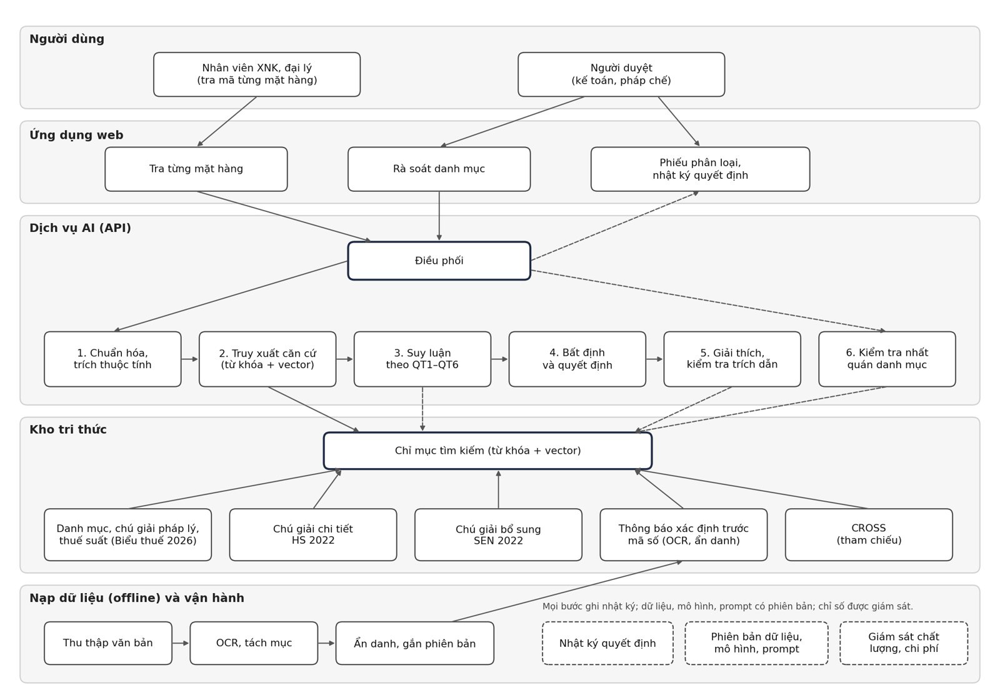

Công nghệ và dữ liệu
Thiết kế bám theo trình tự phân loại theo quy định; dữ liệu là văn bản chính thức và tài liệu tra cứu công khai.
Trình tự phân loại theo quy định
Tổng hợp từ sáu quy tắc tổng quát (Thông tư 31/2022/TT-BTC), thứ tự tài liệu bổ trợ (Thông tư 85/2026/TT-BTC) và hướng dẫn dùng SEN (Công văn 3866/TCHQ-TXNK). Mỗi bước là một yêu cầu thiết kế của hệ thống.
Hồ sơ hàng hóa
Tên, thành phần, cấu tạo, công dụng, mức gia công, dạng hàng, bao bì, tài liệu kỹ thuật. Thiếu thông tin quyết định thì dừng: bổ sung, đề nghị phân tích để phân loại hoặc xin xác định trước mã số.
QT1
Đối chiếu nội dung nhóm và chú giải phần, chương, kể cả chú giải loại trừ.
QT2–QT5 khi cần
Hàng chưa hoàn chỉnh hoặc tháo rời; hỗn hợp; mô tả cụ thể nhất, đặc trưng cơ bản, nhóm sau cùng; hàng giống nhất; bao bì.
QT6
So sánh các phân nhóm cùng cấp để đi xuống phân nhóm 6 số (HS) và dòng 8 số (AHTN).
Tài liệu bổ trợ theo Thông tư 85/2026
Khi chưa xác định được mã duy nhất: chú giải chi tiết HS, Tuyển tập ý kiến phân loại của WCO, chú giải bổ sung SEN, cơ sở dữ liệu về Danh mục.
Đối chiếu và kết luận
So với thông báo của hàng hóa tương tự; kết luận mã 8 số, nêu lý do loại trừ các mã cạnh tranh, lưu hồ sơ căn cứ.
Kiến trúc hệ thống
Năm lớp: người dùng, ứng dụng web, dịch vụ AI, kho tri thức, nạp dữ liệu và vận hành. MVP chạy trên máy nội bộ của doanh nghiệp.

Kiến trúc mô hình
Sáu bước, mỗi bước có thước đo riêng. Thước đo chính là độ chính xác top-3 ở cấp 8 số, vì người khai chọn trong danh sách gợi ý.
| Bước | Kỹ thuật | Đánh giá | Trạng thái |
|---|---|---|---|
| 1. Trích thuộc tính | Mô hình ngôn ngữ theo lược đồ JSON, quy tắc | Độ đúng thuộc tính trên mẫu chấm tay | Kế hoạch |
| 2. Sinh nhóm ứng viên | BM25 + vector đa ngôn ngữ (BGE-M3) trên mô tả nhóm, chú giải, tiền lệ; hợp nhất xếp hạng | Recall@K | Đã chạy BM25 |
| 3. Xếp hạng cấp nhóm | Áp chú giải loại trừ; cross-encoder hoặc mô hình ngôn ngữ chỉ chọn trong ứng viên, bắt buộc dẫn căn cứ | Top-1, top-3 ở cấp 4 số | Kế hoạch |
| 4. Phân giải 6 và 8 số | So sánh phân nhóm cùng cấp trên cây Danh mục; SEN cho dòng có ký hiệu (SEN) | Top-1, top-3 ở HS6 và 8 số; F1 phân cấp | Kế hoạch |
| 5. Bất định và quyết định | Hiệu chỉnh xác suất; tập mã conformal; quy tắc chấp nhận hoặc hỏi thêm | ECE, độ phủ, đường risk–coverage | Đã chạy thử sơ bộ |
| 6. Giải thích, kiểm chứng | Lập phiếu phân loại; kiểm tra trích dẫn tồn tại và hỗ trợ kết luận | Tỷ lệ trích dẫn đúng | Kế hoạch |
Baseline so sánh
Dữ liệu
Nhãn chuẩn là mã ở mục kết quả của thông báo chính thức; phần kết luận được loại khỏi đầu vào để tránh rò rỉ nhãn.
| Nguồn | Quy mô | Định dạng | Vai trò | Trạng thái |
|---|---|---|---|---|
| Thông báo xác định trước mã số (cổng Cục Hải quan) | Tối đa 783 kết quả, quý 1/2023 – 29/9/2026 | PDF scan | Nhãn chuẩn | Đã có đã tải |
| Biểu thuế xuất nhập khẩu song ngữ 2026 | 12.000 dòng 8 số; 11.414 dòng chương 1–97 | Excel | Không gian nhãn, chú giải pháp lý, thuế suất | Đã có |
| Chú giải chi tiết HS 2022 | 2.409 trang | PDF có lớp chữ | Kho tri thức | Đã có |
| Chú giải bổ sung SEN 2022 | Kèm Công văn 3866/TCHQ-TXNK | Kho tri thức | Chưa có có bản công khai | |
| CROSS (Hải quan Mỹ) | 7.851 ruling của 9 chương | JSON qua API | Tham chiếu, thí nghiệm | Đã có |
| Danh mục HS 2022 (UN) | 5.613 dòng cấp 6 | CSV | Tham chiếu | Đã có |
| HSCodeComp | 632 sản phẩm | JSONL | Đánh giá ngoài | Đã có |
Số liệu do nhóm đếm. Văn bản nguồn có tên doanh nghiệp và mã số thuế nên chỉ phần mô tả hàng hóa đã ẩn danh được dùng.
Kết quả thử nghiệm ban đầu
Các kết quả dưới đây kiểm tra cách làm, chưa phải kết quả của sản phẩm trên dữ liệu Việt Nam.
| Thử nghiệm | Thiết lập | Kết quả |
|---|---|---|
| Baseline BM25 | CROSS, 4.103 ruling một mã; chia theo thời gian 80/20; n test = 815 | HS6 top-1 0,459 (KTC 95%: 0,427–0,492); top-3 0,582. Majority theo chương: 0,319 |
| TF-IDF + hồi quy logistic | CROSS; chia 70/15/15 theo thời gian; n test = 615 | HS6 top-1 0,358; majority toàn cục 0,130. Không so trực tiếp với BM25 vì khác cách chia |
| Split conformal (α = 0,10) | Trên xác suất của mô hình TF-IDF + hồi quy logistic | Độ phủ thực tế 0,808, thấp hơn 0,90 do dữ liệu dịch chuyển theo thời gian |
| Kiểm tra rò rỉ nhãn | Mô tả ruling CROSS | Cấp 6 số: 11,4% → 0% sau làm sạch |
| OCR văn bản Việt Nam | 6 thông báo PDF scan; Tesseract tiếng Việt | Đọc đúng mã 8 số ở 6/6 văn bản; mẫu nhỏ |
| Đối chiếu biểu thuế | Biểu thuế 2026 so với trang tra cứu của Cục Hải quan | 4202.19.90 (25%) và 4819.10.00 (15%) khớp |
Công cụ và hạ tầng
Viền liền: đã dùng. Viền đứt: kế hoạch. Thí nghiệm chạy trên Google Colab; MVP chạy on-premise.
Bảo mật và tuân thủ
- Ẩn danh tên doanh nghiệp, mã số thuế, người ký; không đưa PDF gốc lên kho mã công khai
- Chỉ gửi mô tả đã ẩn danh nếu dùng API
- Kết quả ghi rõ do AI đề xuất, chỉ để tham khảo; người khai quyết định
- Tự đánh giá mức rủi ro theo Luật Trí tuệ nhân tạo; xử lý dữ liệu theo Luật Bảo vệ dữ liệu cá nhân